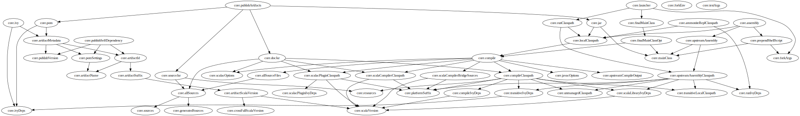
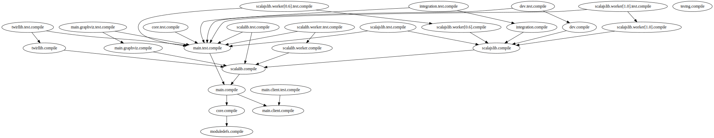
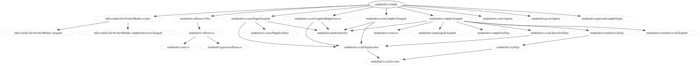

Intro to Mill
Mill is your shiny new Java/Scala build tool! Scared of SBT? Melancholy over Maven? Grumbling about Gradle? Baffled by Bazel? Give Mill a try!
Mill aims for simplicity by re-using concepts you are already familiar with, borrowing ideas from modern tools like Bazel, to let you build your projects in a way that's simple, fast, and predictable.
Mill has built in support for the Scala programming language, and can serve as a replacement for SBT, but can also be extended to support any other language or platform via modules (written in Java or Scala) or through external subprocesses.
Installation
OS X
Installation via homebrew:
brew install mill
Arch Linux
Arch Linux has an AUR package for mill:
pacaur -S mill
Windows
To get started, download Mill from: https://github.com/lihaoyi/mill/releases/download/0.2.8/0.2.8, and save it as mill.bat.
If you're using Scoop you can install Mill via
scoop install mill
Mill also works on a sh environment on Windows (e.g., MSYS2, Cygwin, Git-Bash, WSL; to get started, follow the instructions in the manual section below. Note that:
-
In some environments (such as WSL), mill might have to be run using interactive mode (-i)
-
On Cygwin, run the following after downloading mill:
sed -i '0,/-cp "\$0"/{s/-cp "\$0"/-cp `cygpath -w "\$0"`/}; 0,/-cp "\$0"/{s/-cp "\$0"/-cp `cygpath -w "\$0"`/}' /usr/local/bin/mill
Docker
You can download and run a Docker image containing OpenJDK, Scala and Mill using
docker pull nightscape/scala-mill
docker run -it nightscape/scala-mill
Manual
To get started, download Mill and install it into your system via the following curl/chmod command:
sudo sh -c '(echo "#!/usr/bin/env sh" && curl -L https://github.com/lihaoyi/mill/releases/download/0.2.8/0.2.8) > /usr/local/bin/mill && chmod +x /usr/local/bin/mill'
Development Releases
In case you want to try out the latest features and improvements that are currently in master, unstable versions of Mill are available as binaries named #.#.#-n-hash linked to the latest tag. Installing the latest unstable release is recommended for bootstrapping mill.
Come by our Gitter Channel if you want to ask questions or say hi!
Getting Started
The simplest Mill build for a Java project looks as follows:
// build.sc
import mill._, scalalib._
object foo extends JavaModule {
}
The simplest Mill build for a Scala project looks as follows:
// build.sc
import mill._, scalalib._
object foo extends ScalaModule {
def scalaVersion = "2.12.4"
}
Both of these would build a project laid out as follows:
build.sc
foo/
src/
FileA.java
FileB.scala
resources/
...
out/
foo/
...
You can download an example project with this layout here:
The source code for this module would live in the foo/src/ folder, matching the name you assigned to the module. Output for this module (compiled files, resolved dependency lists, ...) would live in out/foo/.
This can be run from the Bash shell via:
$ mill foo.compile # compile sources into classfiles
$ mill foo.run # run the main method, if any
$ mill foo.runBackground # run the main method in the background
$ mill foo.launcher # prepares a foo/launcher/dest/run you can run later
$ mill foo.jar # bundle the classfiles into a jar
$ mill foo.assembly # bundle classfiles and all dependencies into a jar
$ mill -i foo.console # start a Scala console within your project (in interactive mode: "-i")
$ mill -i foo.repl # start an Ammonite REPL within your project (in interactive mode: "-i")
You can run mill resolve __ to see a full list of the different tasks that are available, mill resolve foo._ to see the tasks within foo, mill inspect
foo.compile to inspect a task's doc-comment documentation or what it depends on, or mill show foo.scalaVersion to show the output of any task.
The most common tasks that Mill can run are cached targets, such as compile, and un-cached commands such as foo.run. Targets do not re-evaluate unless one of their inputs changes, where-as commands re-run every time.
Output
Mill puts all its output in the top-level out/ folder. The above commands would end up in:
out/
foo/
compile/
run/
jar/
assembly/
Within the output folder for each task, there's a meta.json file containing the metadata returned by that task, and a dest/ folder containing any files that the task generates. For example, out/foo/compile/dest/ contains the compiled classfiles, while out/foo/assembly/dest/ contains the self-contained assembly with the project's classfiles jar-ed up with all its dependencies.
Given a task foo.bar, all its output and results can be found be within its respective out/foo/bar/ folder.
Multiple Modules
Java Example
// build.sc
import mill._, scalalib._
object foo extends JavaModule
object bar extends JavaModule {
def moduleDeps = Seq(foo)
}
Scala Example
// build.sc
import mill._, scalalib._
object foo extends ScalaModule {
def scalaVersion = "2.12.4"
}
object bar extends ScalaModule {
def moduleDeps = Seq(foo)
def scalaVersion = "2.12.4"
}
You can define multiple modules the same way you define a single module, using def moduleDeps to define the relationship between them. The above builds expects the following project layout:
build.sc
foo/
src/
Main.scala
resources/
...
bar/
src/
Main2.scala
resources/
...
out/
foo/
...
bar/
...
And can be built/run using:
$ mill foo.compile
$ mill bar.compile
$ mill foo.run
$ mill bar.run
$ mill foo.jar
$ mill bar.jar
$ mill foo.assembly
$ mill bar.assembly
Mill's evaluator will ensure that the modules are compiled in the right order, and re-compiled as necessary when source code in each module changes.
Modules can also be nested:
// build.sc
import mill._, scalalib._
object foo extends ScalaModule {
def scalaVersion = "2.12.4"
object bar extends ScalaModule {
def moduleDeps = Seq(foo)
def scalaVersion = "2.12.4"
}
}
Which would result in a similarly nested project layout:
build.sc
foo/
src/
Main.scala
resources/
...
bar/
src/
Main2.scala
resources/
...
out/
foo/
...
bar/
...
Where the nested modules can be run via:
$ mill foo.compile
$ mill foo.bar.compile
$ mill foo.run
$ mill foo.bar.run
$ mill foo.jar
$ mill foo.bar.jar
$ mill foo.assembly
$ mill foo.bar.assembly
Watch and Re-evaluate
You can use the --watch flag to make Mill watch a task's inputs, re-evaluating the task as necessary when the inputs change:
$ mill --watch foo.compile
$ mill --watch foo.run
$ mill -w foo.compile
$ mill -w foo.run
Mill's --watch flag watches both the files you are building using Mill, as well as Mill's own build.sc file and anything it imports, so any changes to your build.sc will automatically get picked up.
For long-running processes like web-servers, you can use .runBackground to make sure they re-compile and re-start when code changes, forcefully terminating the previous process even though it may be still alive:
$ mill -w foo.compile
$ mill -w foo.runBackground
Mill comes built in with a small number of useful command-line utilities:
all
mill all foo.{compile,run}
mill all "foo.{compile,run}"
mill all foo.compile foo.run
mill all _.compile # run compile for every top-level module
mill all __.compile # run compile for every module
all runs multiple tasks in a single command
resolve
$ mill resolve _
main
moduledefs
core
scalaworker
scalalib
scalajslib
integration
testRepos
...
$ mill resolve _.compile
main.compile
moduledefs.compile
core.compile
scalalib.worker.compile
scalalib.compile
scalajslib.compile
integration.compile
$ mill resolve core._
core.test
core.compile
core.publishVersion
core.runClasspath
core.testArgs
core.sources
...
resolve lists the tasks that match a particular query, without running them. This is useful for "dry running" an mill all command to see what would be run before you run them, or to explore what modules or tasks are available from the command line using resolve _, resolve foo._, etc.
mill resolve foo.{compile,run}
mill resolve "foo.{compile,run}"
mill resolve foo.compile foo.run
mill resolve _.compile # list the compile tasks for every top-level module
mill resolve __.compile # list the compile tasks for every module
mill resolve _ # list every top level module or task
mill resolve foo._ # list every task directly within the foo module
mill resolve __ # list every module or task recursively
mill resolve foo.__ # list every task recursively within the foo module
inspect
$ mill inspect core.run
core.run(ScalaModule.scala:211)
Inputs:
core.mainClass
core.runClasspath
core.forkArgs
core.forkEnv
inspect is a more verbose version of resolve. In addition to printing out the name of one-or-more tasks, it also displays its source location and a list of input tasks. This is very useful for debugging and interactively exploring the structure of your build from the command line.
inspect also works with the same _/__ wildcard/query syntaxes that all/resolve do:
mill inspect foo.compile
mill inspect foo.{compile,run}
mill inspect "foo.{compile,run}"
mill inspect foo.compile foo.run
mill inspect _.compile
mill inspect __.compile
mill inspect _
mill inspect foo._
mill inspect __
mill inspect foo._
show
$ mill show core.scalaVersion
"2.12.4"
By default, Mill does not print out the metadata from evaluating a task. Most people would not be interested in e.g. viewing the metadata related to incremental compilation: they just want to compile their code! However, if you want to inspect the build to debug problems, you can make Mill show you the metadata output for a task using the show command:
All tasks return values that can be shown, not just configuration values. e.g. compile returns that path to the classes and analysisFile that are produced by the compilation:
$ mill show foo.compile
{
"analysisFile": "/Users/lihaoyi/Dropbox/Github/test/out/foo/compile/dest/zinc",
"classes": {
"path": "/Users/lihaoyi/Dropbox/Github/test/out/foo/compile/dest/classes"
}
}
show is generally useful as a debugging tool, to see what is going on in your build:
$ mill show foo.sources
[
"/Users/lihaoyi/Dropbox/Github/test/foo/src"
]
$ mill show foo.compileDepClasspath
[
".../org/scala-lang/scala-compiler/2.12.4/scala-compiler-2.12.4.jar",
".../org/scala-lang/scala-library/2.12.4/scala-library-2.12.4.jar",
".../org/scala-lang/scala-reflect/2.12.4/scala-reflect-2.12.4.jar",
".../org/scala-lang/modules/scala-xml_2.12/1.0.6/scala-xml_2.12-1.0.6.jar"
]
show is also useful for interacting with Mill from external tools, since the JSON it outputs is structured and easily parsed & manipulated.
path
$ mill path core.assembly core.sources
core.sources
core.allSources
core.allSourceFiles
core.compile
core.localClasspath
core.assembly
mill path prints out a dependency chain between the first task and the second. It is very useful for exploring the build graph and trying to figure out how data gets from one task to another. If there are multiple possible dependency chains, one of them is picked arbitrarily.
plan
$ mill plan moduledefs.compileClasspath
moduledefs.transitiveLocalClasspath
moduledefs.resources
moduledefs.unmanagedClasspath
moduledefs.scalaVersion
moduledefs.platformSuffix
moduledefs.compileIvyDeps
moduledefs.scalaLibraryIvyDeps
moduledefs.ivyDeps
moduledefs.transitiveIvyDeps
moduledefs.compileClasspath
mill plan foo prints out what tasks would be evaluated, in what order, if you ran mill foo, but without actually running them. This is a useful tool for debugging your build: e.g. if you suspect a task foo is running things that it shouldn't be running, a quick mill plan will list out all the upstream tasks that foo needs to run, and you can then follow up with mill path on any individual upstream task to see exactly how foo depends on it.
visualize
$ mill show visualize core._
[
".../out/visualize/dest/out.txt",
".../out/visualize/dest/out.dot",
".../out/visualize/dest/out.json",
".../out/visualize/dest/out.png",
".../out/visualize/dest/out.svg"
]
mill show visualize takes a subset of the Mill build graph (e.g. core._ is every task directly under the core module) and draws out their relationships in .svg and .png form for you to inspect. It also generates .txt, .dot and .json for easy processing by downstream tools.
The above command generates the following diagram:

Another use case is to view the relationships between modules:
$ mill show visualize __.compile
This command diagrams the relationships between the compile tasks of each module, which illustrates which module depends on which other module's compilation output:

visualizePlan
$ mill show visualizePlan moduledefs.compile
[
".../out/visualizePlan/dest/out.txt",
".../out/visualizePlan/dest/out.dot",
".../out/visualizePlan/dest/out.json",
".../out/visualizePlan/dest/out.png",
".../out/visualizePlan/dest/out.svg"
]
mill show visualizePlan is similar to mill show visualize except that it shows a graph of the entire build plan, including tasks not directly resolved by the query. Tasks directly resolved are shown with a solid border, and dependencies are shown with a dotted border.
The above command generates the following diagram:

clean
$ mill clean
clean deletes all the cached outputs of previously executed tasks. It can apply to the entire project, entire modules, or specific tasks.
mill clean # clean all outputs
mill clean foo # clean all outputs for module 'foo' (including nested modules)
mill clean foo.compile # only clean outputs for task 'compile' in module 'foo'
mill clean foo.{compile,run}
mill clean "foo.{compile,run}"
mill clean foo.compile foo.run
mill clean _.compile
mill clean __.compile
Search for dependency updates
$ mill mill.scalalib.Dependency/updates
Mill can search for updated versions of your project's dependencies, if available from your project's configured repositories. Note that it uses heuristics based on common versionning schemes, so it may not work as expected for dependencies with particularly weird version numbers.
Current limitations: - Only works for JavaModules (including ScalaModules, CrossScalaModules, etc.) and Maven repositories. - Always applies to all modules in the build. - Doesn't apply to $ivy dependencies used in the build definition itself.
mill mill.scalalib.Dependency/updates
mill mill.scalalib.Dependency/updates --allowPreRelease true # also show pre-release versions
IntelliJ Support
Mill supports IntelliJ by default. Use mill mill.scalalib.GenIdea/idea to generate an IntelliJ project config for your build.
This also configures IntelliJ to allow easy navigate & code-completion within your build file itself.
The Build Repl
$ mill -i
Loading...
@ foo
res1: foo.type = ammonite.predef.build#foo:2
Commands:
.runLocal(args: String*)()
.run(args: String*)()
.runMainLocal(mainClass: String, args: String*)()
.runMain(mainClass: String, args: String*)()
.console()()
Targets:
.allSources()
.artifactId()
.artifactName()
...
@ foo.compile
res3: mill.package.T[mill.scalalib.CompilationResult] = mill.scalalib.ScalaModule#compile:152
Inputs:
foo.scalaVersion
foo.allSources
foo.compileDepClasspath
...
@ foo.compile()
res2: mill.scalalib.CompilationResult = CompilationResult(
root/'Users/'lihaoyi/'Dropbox/'Github/'test/'out/'foo/'compile/'dest/'zinc,
PathRef(root/'Users/'lihaoyi/'Dropbox/'Github/'test/'out/'foo/'compile/'dest/'classes, false)
)
You can run mill -i to open a build REPL; this is a Scala console with your build.sc loaded, which lets you run tasks interactively. The task-running syntax is slightly different from the command-line, but more in-line with how you would depend on tasks from within your build file.
You can use this REPL to interactively explore your build to see what is available.
Deploying your code
The two most common things to do once your code is complete is to make an assembly (e.g. for deployment/installation) or publishing (e.g. to Maven Central). Mill comes with both capabilities built in.
Mill comes built-in with the ability to make assemblies. Given a simple Mill build:
// build.sc
import mill._, scalalib._
object foo extends ScalaModule {
def scalaVersion = "2.12.4"
}
You can make a self-contained assembly via:
$ mill foo.assembly
$ ls -lh out/foo/assembly/dest/out.jar
-rw-r--r-- 1 lihaoyi staff 5.0M Feb 17 11:14 out/foo/assembly/dest/out.jar
You can then move the out.jar file anywhere you would like, and run it standalone using java:
$ java -cp out/foo/assembly/dest/out.jar foo.Example
Hello World!
To publish to Maven Central, you need to make foo also extend Mill's PublishModule trait:
// build.sc
import mill._, scalalib._, publish._
object foo extends ScalaModule with PublishModule {
def scalaVersion = "2.12.4"
def publishVersion = "0.0.1"
def pomSettings = PomSettings(
description = "Hello",
organization = "com.lihaoyi",
url = "https://github.com/lihaoyi/example",
licenses = Seq(License.MIT),
versionControl = VersionControl.github("lihaoyi", "example"),
developers = Seq(
Developer("lihaoyi", "Li Haoyi","https://github.com/lihaoyi")
)
)
}
You can download an example project with this layout here:
Which you can then publish using the mill foo.publish command, which takes your sonatype credentials (e.g. lihaoyi:foobarbaz) and GPG password as inputs:
$ mill foo.publish
Missing arguments: (--sonatypeCreds: String, --gpgPassphrase: String, --release: Boolean)
Arguments provided did not match expected signature:
publish
--sonatypeCreds String (format: "username:password")
--gpgPassphrase String
--release Boolean
You also need to specify release as true or false, depending on whether you just want to stage your module on oss.sonatype.org or you want Mill to complete the release process to Maven Central.
If you are publishing multiple artifacts, you can also use mill mill.scalalib.PublishModule/publishAll as described here
Structure of the out/ folder
The out/ folder contains all the generated files & metadata for your build. It is structured with one folder per Target/Command, that is run, e.g.:
out/core/compile/out/main/test/compile/out/main/test/forkTest/out/scalalib/compile/
There are also top-level build-related files in the out/ folder, prefixed as mill-*. The most useful is mill-profile.json, which logs the tasks run and time taken for the last Mill command you executed. This is very useful if you want to find out exactly what tasks are being run and Mill is being slow.
Each folder currently contains the following files:
-
dest/: a path for the Task to use either as a scratch space, or to place generated files that are returned using PathRefs. Tasks should only output files within their given dest/ folder (available as T.ctx().dest) to avoid conflicting with other Tasks, but files within dest/ can be named arbitrarily.
-
log: the stdout/stderr of the Task. This is also streamed to the console during evaluation.
-
meta.json: the cache-key and JSON-serialized return-value of the Target/Command. The return-value can also be retrieved via mill show
core.compile. Binary blobs are typically not included in meta.json, and instead stored as separate binary files in dest/ which are then referenced by meta.json via PathRefs
The out/ folder is intentionally kept simplistic and user-readable. If your build is not behaving as you would expect, feel free to poke around the various dest/ folders to see what files are being created, or the meta.json files to see what is being returned by a particular task. You can also simply delete folders within out/ if you want to force portions of your project to be re-built, e.g. deleting the out/main/ or out/main/test/compile/ folders.
About the Author: Haoyi is a software engineer, an early contributor to Scala.js, and the author of many open-source Scala tools such as Mill, the Ammonite REPL and FastParse.
If you've enjoy using Mill, or enjoyed using Haoyi's other open source libraries, please chip in (or get your Company to chip in!) via Patreon so he can continue his open-source work